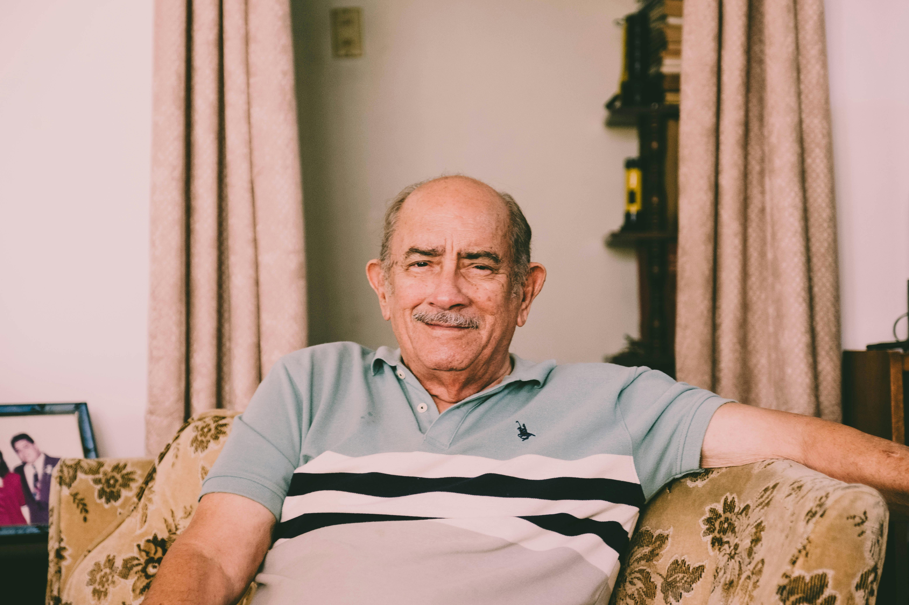
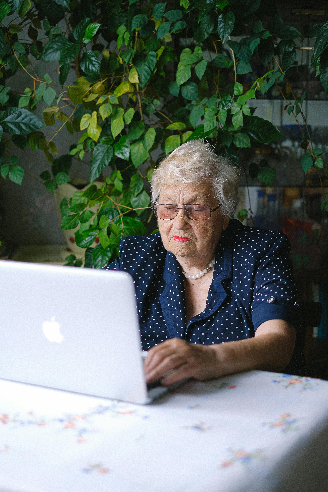

Side By Side
O Side By Side é uma plataforma que conecta jovens que buscam uma renda extra a idosos que precisam de companhia ou ajuda para realizar tarefas do dia a dia.

1PREENCHA SEU PERFIL
Personalize seu perfil adicionando informações como o tipo de ajuda de que você precisa, sua disponibilidade semanal e outras preferências. Inclua uma descrição breve sobre você para que os jovens entendam melhor como podem ajudar. Não se esqueça de carregar uma foto simpática e convidativa para tornar o perfil mais atrativo.

2 CONFIRA OS PERFIS DOS JOVENS
Se encontrar um jovem que pareça adequado, visite o perfil dele para saber mais sobre suas habilidades e experiências registradas. Você também poderá verificar sua disponibilidade e preferências, ajudando a escolher alguém que seja uma boa opção para suas necessidades.
3 CONHEÇA O JOVEM
Envie uma mensagem inicial para o jovem de sua preferência e apresente um pouco das suas necessidades. Caso ambos se sintam confortáveis, marque uma chamada por telefone ou vídeo para conversar melhor. Se tudo parecer bem, combine um encontro presencial para verificar se é o suporte ideal para você.